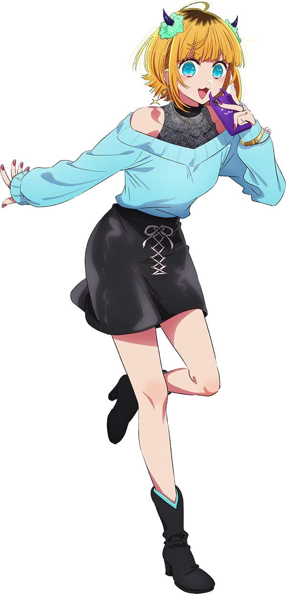
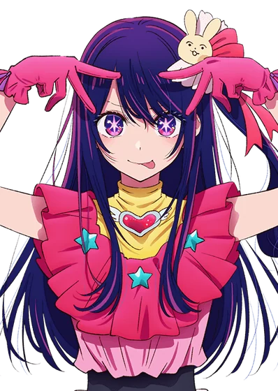
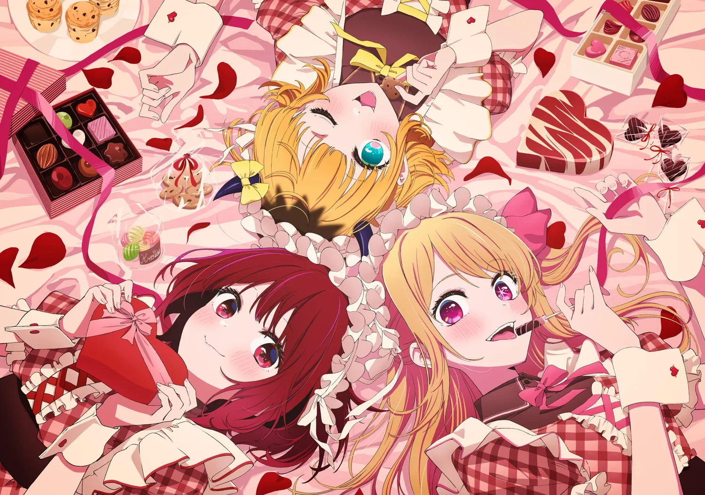
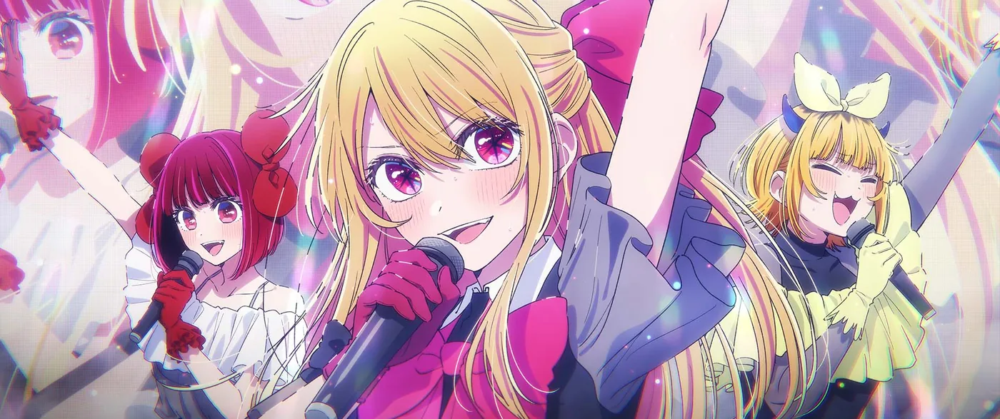
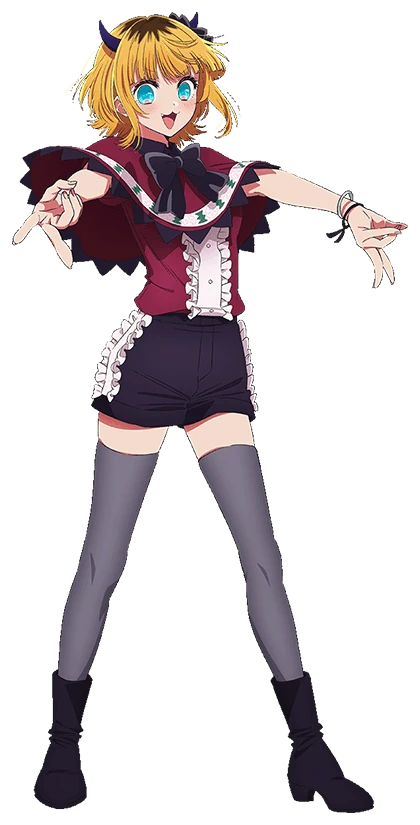
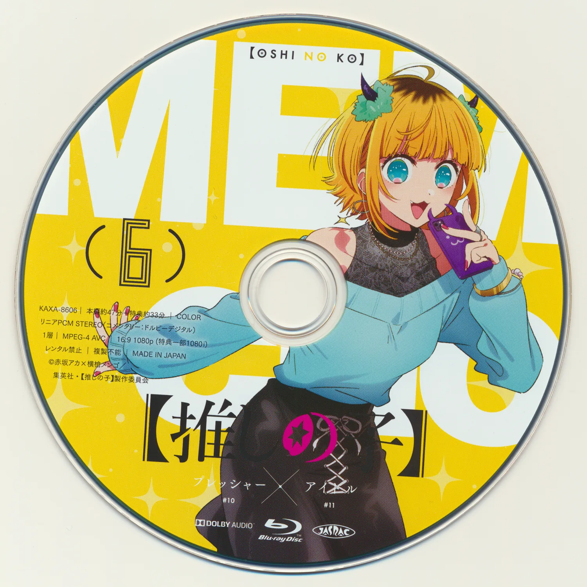

How MEM-cho
became an idol.
Seven years the long way round — the story of reopening a door that had already closed.
KEEP SCROLLING — IT MOVES SIDEWAYS

hi~ welcome to my channel!
(01)PROFILE

A hit influencer who moves between YouTube and TikTok. The drowsy drawl and the tiny devil horns are her trademark — but behind them she calculates, more coolly than anyone, exactly what makes something take off. Scouted by Aqua after a reality dating show, she picked up a dream she had once given up: being an idol, in the new B-Komachi.
0K
YouTube subscribers
0K
TikTok followers
0CM
Height
* Subscriber and follower counts as listed on the Season 1 official site character page.
CLASSIFIED — FILE 18/25
…or is it? Scratch the redacted panel with your finger or cursor to find out.
* Mild spoiler for late Season 1.
ACTUAL AGE
25
SEVEN YEARS SHAVED OFF — DON'T TELL
(02)ORIGIN
Seven years the long way round — the story of reopening a door that had already closed.
KEEP SCROLLING — IT MOVES SIDEWAYS
01

Childhood
A girl who looked up at idols shining on stage. A fan of the legendary B-Komachi and its centre, Ai, she knocked on audition doors determined to stand there herself one day.
02

High school, year 3
Then her mother collapsed, and everything changed. She took leave from school and went to work to pay for her younger brothers' education. The dream went into a drawer.
03

Age twenty-three
By the time her mother recovered she was twenty-three — already past the age limit for idol auditions. The door to the stage she dreamed of had quietly shut.
04
Going live
She started streaming to take the edge off. Still on leave, she was technically a student — and the “real high-school girl” label she half-jokingly used blew up so fast there was no walking it back.
05


Reality show
She joins the dating reality show LoveNow, where she meets Aqua and Akane. The one who reads the room from a step back, lifts the mood — and knows exactly how the internet works.
06

The scout
After the show wraps, Aqua invites her into the new B-Komachi. She hesitates and admits she is really twenty-five — and Ruby and Kana tell her it doesn't matter, and hold out their hands.
07

First stage
New B-Komachi's first live show, at the Japan Idol Festival. The yellow glow rising from the crowd was for MEM-cho — on the stage of her dreams at last, after the long way round.
To be
continued.
(03)WARDROBE
Swipe the figure, or pick a look from the index.
01 / 03
Sky-blue off-shoulder knit over a black skirt, a mint scrunchie, and a purple phone case with little devil ears. Everyday influencer style.


(04)LIVE
You've dropped into MEM-cho's live stream. Tap the screen as fast as you can to send hearts and push the buzz gauge to the top — number one on the real-time trend chart. Stop tapping and the hype cools off.

come in, come in~! smash that heart!
REAL-TIME TREND
N°1(05)NEW B-KOMACHI
Three members carrying a legendary name. Pick one to change the colour of the penlights in the crowd.
Penlights turn yellow for MEM-cho.
(05.1)HER PEOPLE
A castmate from LoveNow — and the scout who brought her into the new B-Komachi. The one who reopened a door that had closed.

Both idol nerds to the bone. They can talk fandom until sunrise and never run out of things to say.
They bicker constantly, but she fully respects the centre's skill — and is usually the first to notice what Kana is really feeling.
They laughed and cried through the same show. MEM-cho watches the triangle between Aqua, Kana and Akane from a step back — and worries.
(06)ARCHIVE
Flick the top print sideways to see the next one. Tap it to enlarge.
01 / 06
In the nemophila field



(07)FOOTNOTES
Never revealed in the story. Where the name “MEM” comes from is still a mystery, too.
She was reportedly conceived as a guest for the reality-show arc only — then promoted to a main character.
Better than Ruby, but firmly in the “so clumsy it's charming” camp. Which is why the centre spot went to Kana.
A headband shaped like tiny devil horns. She almost never takes it off — it's her trademark.
On the anime's official website she has appeared as a VTuber, delivering the latest news by video.
With an older sister's perspective and a sharp read on social media, she is the steady hand who helps produce the group.